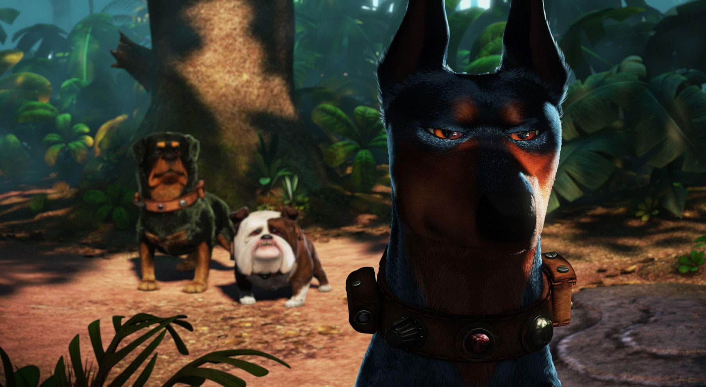

Dragon Ball Z
Dragon Ball Z Là-haut
Là-haut Mulan
MulanCarl Fredricksen, petit garçon, rêve d'être un explorateur depuis qu'il a vu aux actualités du cinéma les exploits de Charles Muntz, célèbre aventurier qui, à bord de son dirigeable et accompagné de ses chiens, a découvert les chutes du Paradis, un espace perdu au Venezuela, mais qui ensuite a ramené un squelette qui a été considéré comme un faux par les scientifiques, ce qui a contraint Charles à aller en Amérique du Sud dans un seul but : prouver qu'il a raison. Jouant dans la rue en imitant son héros, Carl fait la connaissance d'Ellie, une petite fille délurée qui partage le même rêve que lui.

I. Préface
II. La vie qui s'écoule
Des années plus tard, Ellie et Carl se marient et rêvent d'aller jusqu'aux chutes du Paradis. Mais les mauvaises nouvelles s'accumulent : le couple ne peut pas avoir d'enfant et les économies pour leur grand voyage sont écornées par les aléas de la vie. Quand Carl peut enfin acheter des billets d'avion pour l'Amérique du Sud, Ellie tombe malade et meurt. Carl reste seul dans sa maison, la dernière debout dans un quartier de style victorien que les engins de chantier rasent pour construire des immeubles modernes. Mais Carl, qui a maintenant 78 ans, refuse de vendre sa demeure et de partir en maison de retraite.
III. La rencontre avec Russell
Un jour, un jeune « explorateur » (similaire à un scout) nommé Russell vient frapper à sa porte et lui demande s'il peut lui rendre service : il veut obtenir son badge d'aide aux personnes âgées. Pour se débarrasser de lui, Carl l'envoie à la recherche d'un oiseau imaginaire nommé le dabou qui viendrait la nuit piétiner ses fleurs.
IV. La maison de retraite
Peu de temps après, un des camions du chantier renverse la boîte aux lettres de Carl ; celui-ci panique et, en voulant repousser l'ingénieur qui veut réparer les dégâts, il le frappe à la tête avec sa canne et le blesse. La compagnie saisit l'occasion pour lui intenter un procès et le faire placer en maison de retraite.
V. Le grand voyage
Le jour où les employés de la résidence de retraite du Grand Chêne viennent chercher Carl, la maison s'envole grâce à des milliers de ballons attachés par l'intérieur de la cheminée : Carl part accomplir son rêve, aller s'installer aux chutes du Paradis. Mais il découvre que Russell était sur son palier au moment du décollage. Réticent à le faire rentrer, Carl finit par accepter. Après un orage qui a menacé leurs vies, le vieil homme se réveille et commence à faire descendre la maison, mais lorsqu'il touche enfin le sol, il aperçoit les chutes du paradis, de l'autre côté de la falaise où la maison s'est posée. Énervé, il avance avec Russell, qui l'aide à tirer la maison à l'aide de cordes.
VI. Les fidèles compagnons
Russell annonce qu'il doit aller au "petit coin". Après avoir fini, alors qu'il mange du chocolat, il se rend compte qu'il lui en manque un bout. Il aperçoit alors un bec bariolé, et en conclut que c'est le petit dabou. Mais il voit alors un animal se dresser devant lui, et revient avec lui. Il pose des questions à Carl sur le dabou et le vieil homme lui répond « oui » tout le temps. Lorsque Russell en conclut que son animal est bel et bien l'oiseau dont parle Carl au début du film, Carl se retourne et voit l'animal géant, que Russell a baptisé Kevin. Incrédule, Carl refuse de le garder, mais l'oiseau et le jeune explorateur sont devenus inséparables. Carl se voit donc contraint de dire oui une fois de plus. Ils avancent encore, et trouvent un chien, Doug, qui parle grâce à un collier. Il se révèle adorable, mais l'oiseau saute sur lui. Seul l'enfant parvient à convaincre le dabou de cesser. Carl tente de se débarrasser du chien et de l'oiseau pour être tranquille, mais il n'y parvient pas, et c'est sur des rochers qu'ils se réunissent tous. Le dabou crie alors et Doug explique qu'elle appelle ses petits. Étonné que Kevin soit une femelle, Russell est triste de devoir laisser le volatile rejoindre ses oisillons.
VII. Les prisonniers
C'est à ce moment que trois chiens, Alpha, Beta et Gamma, arrivent et demandent à Doug où est son prisonnier, et le canin dit qu'il l'a perdu. Alors que les deux humains tentent de s'échapper en s'opposant à l'idée imposée par les animaux de les accompagner en tant que prisonniers, ils décident de les suivre, voyant la férocité dans les yeux des chiens. Ils arrivent dans une meute de chiens, où ils sont sur le point d'être dévorés. Mais leur maître leur dit de cesser. .
VIII. La rencontre
La personne s'avère être Charles Muntz. Ce dernier annonce que les deux personnages sont désormais leurs invités. Les deux protagonistes attachent la maison au mur pour entrer dans le dirigeable de l'explorateur. Les chiens préparent le banquet des invités, alors que Doug a reçu la collerette de la honte. Charles Muntz montre à ses invités ses squelettes d'animaux trouvés et mange ensuite avec eux.
IX. La fuite
Durant le repas, Russell parle involontairement de Kevin, et malgré une tentative de Carl pour éviter le sujet et alors que l'oiseau est repéré par Muntz, ce dernier révèle son vrai visage en parlant de tous les explorateurs qu'il a tué pour ne pas qu'on l'entrave dans sa quête de l'oiseau, unique raison pour laquelle il est resté aux Chutes du Paradis. Fredricksen et l'enfant s'enfuient en courant dans les montagnes pour sauver leurs vies. Ils se débarrassent des chiens grâce à Doug qui a ralenti la meute et Kevin qui les a fait courir plus rapidement. Les chiens reviennent bredouilles, mais l'oiseau est blessé. Carl décide de l'aider à retrouver sa progéniture, mais ils sont localisés par l'ennemi, qui brûle la maison de Carl, le forçant à choisir entre cette dernière et l'oiseau. Carl choisit la première, et Russell n'en revient pas de cet acte. Le feu est éteint, et le lendemain, Russell boude.
X. La mission de sauvetage
Alors que Carl découvre dans le livre d'aventures d'Ellie des photos de mariage, avec à la fin un mot pour l'encourager à passer à autre chose, le jeune garçon s'envole seul avec des ballons pour tenter de sauver Kevin. Il arrive au dirigeable et se fait capturer, et, au moment d'être lâché dans le vide, est sauvé par Carl qui est accompagné de Doug.Carl doit se battre avec sa canne. Les deux vieux hommes arrêtent après un mal de dos. C'est le moment où Doug se retrouve dans un cul-de-sac. Il recule, mais pendant ce temps Muntz a coincé Fredricksen et s'apprête à le tuer, tentative annulée par un crachat de dentier de la part de ce dernier. Kevin et Carl montent au-dessus du dirigeable et Muntz a une autre idée plutôt que les poursuivre. Russell de son côté s'est débarrassé des avions, et pose la maison sur le dirigeable pour récupérer les trois personnages, dont Doug qui est devenu alpha en mettant la collerette de la honte au précédent alpha, dont le collier est à nouveau cassé. Ils s'apprêtent à entrer, quand leur adversaire revient carabine en main. Il force Carl à retenir la maison et tente d'entrer. Tout à coup, Carl a une idée : il ordonne à l'enfant de saisir les deux bêtes et alors que leur ennemi parvient à entrer, Fredricksen montre du chocolat. Kevin ne résiste pas et saute de la fenêtre tandis que la maison se détache du dirigeable. Charles saute aussi, mais des ballons s'accrochent à ses pieds, qui se détachent et le font tomber dans le vide.
XI. Le dénouement
Carl les remonte, et alors que Russell s'excuse pour sa maison en train de tomber, Carl répond que c'est juste une maison et plus tard, le dabou est relâché près de ses petits. La mère part avec ses petits, et les deux protagonistes prennent le contrôle du dirigeable. Lors de la cérémonie des apprentis explorateurs, le père de Russell n'est pas là, car comme ce dernier l'a dit plus tôt, il n'est jamais là. C'est donc Carl qui vient à sa place et aussi pour que le badge d'assistance à personne âgée ne soit pas donné pour rien. Russell reçoit cependant en plus le badge d'explorateur d'Ellie que le vieil homme avait gardé durant toutes ces années. Le film prend fin alors que les deux héros mangent une glace en jouant à un des jeux favoris de l'enfant. Le dernier plan du film montre les Chutes du Paradis avec la maison qui repose désormais dessus, comme Carl l'avait promis à sa femme.